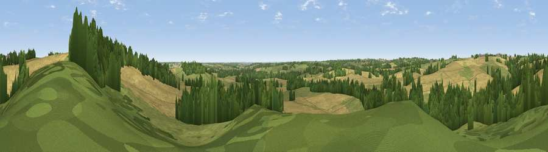

Viewpoint near Haselbech
#34344 in England · top 52% of its area beats it · near HaselbechWhere it is
The exact computed spot (SP 70275 76125). Click the marker for map links.
The view, rendered

A 360° render of this exact spot computed from the terrain model, tree cover and land cover — summer colours, afternoon light, calibrated against photographs of famous viewpoints. Real trees, hedges and buildings will differ in detail.
The panorama
Grey silhouette: terrain skyline in each direction (720 bearings, Earth curvature and refraction included). Dashed green: skyline with trees (+15 m) and buildings (+8 m) as obstacles. Blue strip: how far the ground is visible on each bearing.
Where the view opens
Wedge length = distance to the farthest visible ground on that bearing (vegetation-aware). Rings at 10, 25 and 50 km.
What fills the view
53% cropland · 25% grassland · 22% woodland
Angular shares of the visible panorama (visual magnitude), not map area. Landscape diversity 0.45 (0–1 Shannon).
Key numbers
More beautiful places nearby
The staircase of upgrades: each row has a higher view potential than everything closer. Driving times are estimates from straight-line distance, calibrated against real road routing — check an actual route before setting out.
| Place | Direction | Drive | Score |
|---|---|---|---|
| Viewpoint near Haselbech | ENE · 0 km | ~1 min | 47.1 |
| Viewpoint near Cold Ashby | W · 7 km | ~14 min | 61.7 |
| Viewpoint near Staverton | SW · 21 km | ~35 min | 63.3 |
| Big Hill - Staverton Clump | SW · 21 km | ~36 min | 68.4 |
| Viewpoint near Northend | SW · 39 km | ~58 min | 69.7 |
| Viewpoint near Northend | SW · 39 km | ~58 min | 70.3 |
| Broombriggs Hill | NNW · 42 km | ~62 min | 74.4 |
| Viewpoint near Woodhouse Eaves | NNW · 43 km | ~63 min | 77.7 |
52.37866, -0.96904 · source: screening · position refined by local search. Computed location — check access rights before visiting.